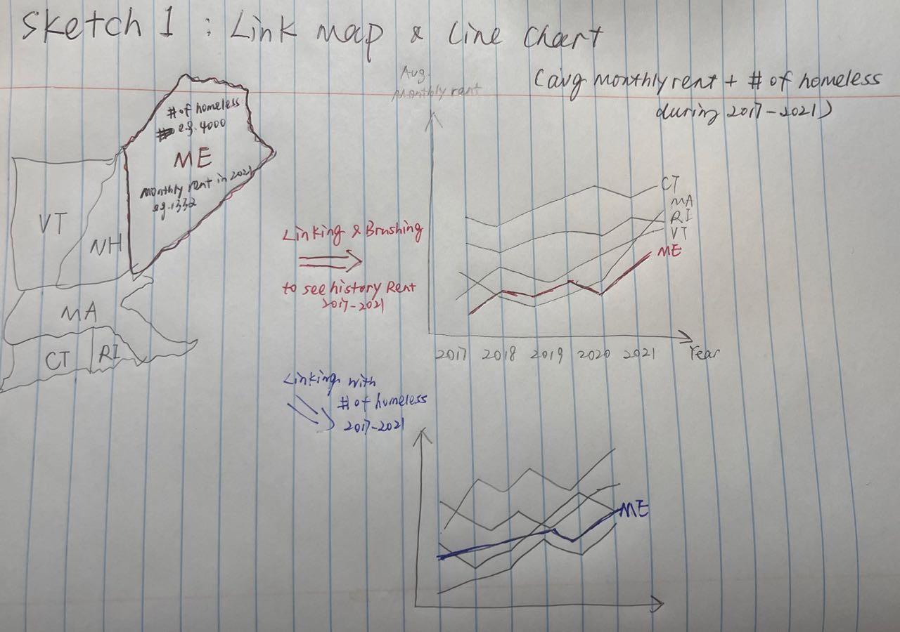

Demo Video
Embedded MP4 demo video using the HTML5 <video> tag. For example, this screen recording Prof. Cody Dunne made of Mike Bostock's flexible transitions in D3 slide:
Visualization explanation
Final visualization screenshots (PNG images), design justifications, UI walk-through, and linked presentation slides.
Data Analysis
Our interactive design prioritizes offering users a comprehensive overview of the New England area's current situation. We place an emphasis on three components visualizing rent growth in different regions, presenting homeless population variations over time, and providing users with an average homeless population figure for the entire New England area. It allows users to select their preferred state and track changes in the variation of homeless population and rent growth over the years. Enabling them to delve into specific data for a more localized perspective, all while maintaining an overarching view of the New England area as a whole.
The primary objective of our visualization is to introduce fundamental information, followed by a gradual presentation of our analysis regarding the relationship between homeless population and rent growth in different areas. This approach equips our audience with the necessary context to comprehend the socioeconomic implications of housing inequality at the neighborhood level.
Task Analysis
Domain Tasks:
- Analyze housing inequality's impact on demographics, affordability, and homelessness.
Processes:
- Gather, merge, and analyze diverse housing-related data.
- Visualize trends and perform statistical analyses.
Goals:
- Generate insights on socioeconomic impact.
- Identify affordability disparities.
- Explore rent growth trends.
- Analyze homeless demographics.
Abstract Tasks:
- Handle complex data.
- Create meaningful visualizations.
- Perform statistical analysis.
- Model relationships between variables.
Design Process
Sketches and design choices to justify final visualization.
Initially, we planned to connect three graphs by selecting a state on one to highlight it on the others. However, we pivoted to a separate map and incorporated tooltips. This change allows us to present specific state data, such as monthly rent and homeless population, in a more focused manner.

At first we were planning to implement area charts to represent the variation of homeless population over years because we think area charts could better convey information about how does things works differently on people from different background.

This graph offers users a visual representation of the ratio between rent growth rates and homeless population across various states. We later realize overall population should be included when considering homeless popualtion among different areas.

In contrast to a conventional pie chart, this one introduces an approach by using images to represent each gender category with the size of these images conrresponding to the population distribution.
Conclusion
Short summary of work completed and areas for improvement/future-work.
Expectation: Meaningfully wraps up project and has good future directions.
Acknowledgments
List here where any code, packages/libraries, text, images, designs, etc. that you leverage come from.
- D3: Data-Driven Documents by Mike Bostock.
- Pure CSS responsive "Fork me on GitHub" ribbon by Chris Heilmann.
- Line plot with selevral groups by Yan Holtz
- US State Map by NPashaP
Citations
Bateman, Scott, Regan L. Mandryk, Carl Gutwin, Aaron Genest, David McDine, and Christopher Brooks. 2010. “Useful Junk?: The Effects of Visual Embellishment on Comprehension and Memorability of Charts.” In Proceedings of the SIGCHI Conference on Human Factors in Computing Systems, 2573–82. Atlanta Georgia USA: ACM. https://doi.org/10.1145/1753326.1753716.
Battle, Leilani, Danni Feng, and Kelli Webber. 2022. “Exploring D3 Implementation Challenges on Stack Overflow.” In 2022 IEEE Visualization and Visual Analytics (VIS), 1–5. Oklahoma City, OK, USA: IEEE. https://doi.org/10.1109/VIS54862.2022.00009.
Brehmer, Matthew, and Tamara Munzner. 2013. “A Multi-Level Typology of Abstract Visualization Tasks.” IEEE Transactions on Visualization and Computer Graphics 19 (12): 2376–85. https://doi.org/10.1109/TVCG.2013.124.
Cleveland, William S., and Robert McGill. 1984. “Graphical Perception: Theory, Experimentation, and Application to the Development of Graphical Methods.” Journal of the American Statistical Association 79 (387): 531–54. https://doi.org/10.1080/01621459.1984.10478080.
Kosara, Robert, and Jock Mackinlay. 2013. “Storytelling: The Next Step for Visualization.” Computer 46 (5): 44–50. https://doi.org/10.1109/MC.2013.36.